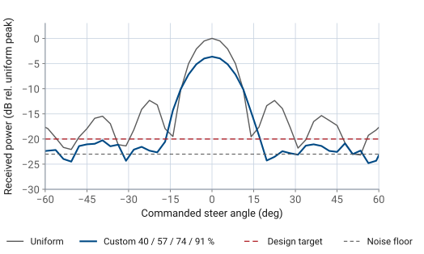
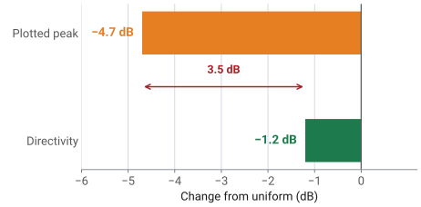

L25 - Tapering Lab#
Tapering Lab
Today that table goes to the bench.
Lesson 25 Lab · Antennas, Phased Arrays, and Radar Systems · Dr. Neil Rogers
Learning Objectives
- I can apply amplitude tapers on the PHASER and measure the sidelobe and beamwidth changes.
- I can distinguish the plotted peak drop from the directivity loss when a taper is applied.
- I can verify a taper's predicted beam broadening against measurement.
- I can design my own taper and evaluate it against the presets.
Lesson 24 ended with a table of what each taper family costs: sidelobes come down, the beam broadens, and the aperture gives up some efficiency. Today that table goes to the bench. You will load each preset on the PHASER, sweep the beam past the HB100, and check the measured beamwidth and peak level against the numbers you predicted. The measurement also forces a distinction that is easy to lose on paper — the peak drop you watch happen on the plot is not the directivity loss the array suffers, and the gap between them is several decibels.
What Lesson 24 predicts
The expectation table below is the prediction column for every measurement you make today. The \(a_n\) column is what the GUI writes to the eight Element Gains sliders when you press a preset button; everything to its right is what the sweep reads relative to a uniform-taper reference.
Preset |
\(a_n\) (%) |
HPBW |
Peak drop |
\(\eta_t\) |
|---|---|---|---|---|
Uniform |
100 × 8 |
\(13.1^\circ\) |
0 dB |
1.00 (0 dB) |
Hann |
12, 43, 77, 100, 100, 77, 43, 12 |
\(19.5^\circ\) |
\(-4.7\) dB |
0.75 (\(-1.2\) dB) |
What Lesson 24 predicts — Blackman and Chebyshev
Preset |
\(a_n\) (%) |
HPBW |
Peak drop |
\(\eta_t\) |
|---|---|---|---|---|
Blackman |
6, 27, 66, 100, 100, 66, 27, 6 |
\(23.1^\circ\) |
\(-6.1\) dB |
0.66 (\(-1.8\) dB) |
Chebyshev |
4, 23, 62, 100, 100, 62, 23, 4 |
\(24.3^\circ\) |
\(-6.5\) dB |
0.62 (\(-2.1\) dB) |
Record two numbers, not one
The peak drop is the coherent receive-voltage loss: at broadside the eight element signals add in phase, so the summed voltage is proportional to \(\sum a_n\) instead of \(N\), and the plotted peak falls by \(20\log_{10}(\sum a_n / N)\). That is the number the Rectangular plot shows you. The directivity loss is the taper efficiency \(\eta_t = (\sum a_n)^2 / (N \sum a_n^2)\), which for the Hann preset is \(-1.2\) dB, not \(-4.7\) dB. Both numbers are real and both belong in your table, so record them in separate columns and never let one stand in for the other. Part 4 works through where the difference comes from.
The floor sets what you can report
One measurement will refuse to give you a number. The sweep’s noise floor sits about 23 dB below the uniform-taper peak, and every tapered preset pushes its first sidelobe further down than that. The correct table entry in those rows is “below the noise floor”, not a value read off the grass. Quoting \(-27\) dBc from a trace whose floor is at \(-23\) dBc reports the noise, not the antenna.
Interactive — the measured sweep for each taper preset
The widget below runs the same sweep in the browser. Start on Uniform and note the first sidelobe near \(-13\) dBc, then step through the presets and watch two things happen at once: the main lobe widens and its peak drops, while the sidelobes sink into the grass. The \(\eta_t\) pill is the directivity loss, so compare it against the peak drop pill each time — the two never agree.
Equipment and setup
You need the ADALM-PHASER kit with its Raspberry Pi and Pluto attached, the HB100 source and its battery, and a laptop on the same network.
Setup
Place the HB100 at boresight, about 1 m from the array face, aimed at the center of the patch row. Leave it there for the whole lab. Every number today is a comparison between tapers, so the source must not move between sweeps.
Power the PHASER, wait for the Pi to boot, and open
http://phaser.local:8080in a browser.In the sidebar, press Calibrate under Configuration and let it finish. An uncalibrated array carries element-to-element gain and phase errors that look exactly like a taper you did not ask for.
Press Lab preset 3 Tapering. This loads the Configuration values for the HB100 and selects the Rectangular plot tab.
Under Element Gains, confirm Enforce Symmetric Taper is on. With it on, moving one slider moves its mirror-image partner, which is what you want for every taper in this lab.
No hardware?
Note
Run the backend in simulation mode with
python phaser_headless.py --sim and open the same URL. The simulator places
a target at boresight, which is where this lab needs it, and the expectation
table above was measured against it. Every step below works unchanged.
Step (a): the uniform reference
Press the Uniform taper preset, confirm all eight sliders read 100%, and press Start. Read the Peak Array Gain and Est. Angle values, then press Freeze to hold this trace. It stays on the plot as your reference for the rest of the lab, and every peak drop you record is measured against it.
Record the uniform HPBW by reading the angles where the trace falls 3 dB below its own peak. Expect about \(13^\circ\), and expect it to disagree with the \(13.2^\circ\) theory value by a degree or so — the sweep steps in \(2.8125^\circ\) increments, so the 3 dB crossings land between samples.
Step (b): Hann
Press the Hann preset. Before sweeping, do three things:
Read the eight slider values and copy them into your table. They should read 12, 43, 77, 100, 100, 77, 43, 12.
Compute \(\sum a_n\) and predict the peak drop from \(20\log_{10}(\sum a_n/N)\).
Write down the predicted HPBW from the Part 1 table, \(19.5^\circ\).
Now press Start. The main lobe should widen from about \(13^\circ\) to about \(19^\circ\), the peak should sit about 4.7 dB below the frozen uniform trace, and the first sidelobes that were plainly visible at \(\pm 22^\circ\) should be gone into the noise. Record the peak drop, the HPBW, and “below the noise floor” for the sidelobe level.
Step (c): Blackman and Chebyshev
Repeat step (b) for the Blackman and Chebyshev presets, predicting before each sweep. These two tapers pull the end elements down to 6% and 4%, so most of the array’s outer aperture is barely contributing: the beam widens past \(23^\circ\) and the peak drops past 6 dB, for sidelobes that were already invisible after Hann. This is the point of diminishing returns that Lesson 24 described: here it costs 5 degrees of beamwidth and returns nothing this measurement can see.
Step (d): design your own taper
With Enforce Symmetric Taper still on, design a taper of your own against this specification:
HPBW no wider than \(17^\circ\), with the first sidelobe below \(-20\) dBc.
Start from Uniform and pull the two end elements down together, leaving the middle elements high. A mild taper is enough: put the end elements somewhere near 40% to 50% and step the elements between them smoothly up to 100%. Work by iteration — set the sliders, press Start, read the HPBW and the sidelobe level, and adjust. Two or three passes will get you there.
Step (d): design your own taper, continued
Record your final eight gain values and the measured result. A taper with the end elements at 45% gives roughly \(15^\circ\) of beamwidth, a peak drop near \(-3.3\) dB, and sidelobes that have just reached the floor.

Key point
Sidelobe control is not all-or-nothing. Pulling only the end elements down by half takes the first sidelobe from \(-13\) dBc to below \(-20\) dBc, for 2 degrees of beamwidth and a third of a decibel of directivity. The presets go much further than that, at a much higher cost in both.
Step (e): restore
Press the Uniform preset before you leave, so the next section starts from a known state.
Working the Hann numbers
Work the Hann preset all the way through. The eight amplitudes are \(a_n = 0.12,\ 0.43,\ 0.77,\ 1.00,\ 1.00,\ 0.77,\ 0.43,\ 0.12\), giving
Peak drop and directivity loss
The plotted peak drop follows from the first sum alone:
The directivity loss follows from both sums:
The plotted drop and the directivity loss compared

Where the other 3.5 dB went
So the trace drops 4.7 dB and the antenna loses 1.2 dB of directivity. The remaining 3.5 dB did not go anywhere, because it was never a loss. The sweep plots received power normalized to full scale, and the tapered array collects less signal voltage from the source — that part is real and it is the 4.7 dB. But the tapered array also responds to less of everything else arriving from off-boresight, and the noise-equivalent aperture shrinks along with the signal sum. Directivity is the ratio of on-axis intensity to the average over all angles, and that ratio only falls by \(\eta_t\). If you re-normalized each trace to its own peak instead of to the uniform peak, the 4.7 dB would vanish from the plot entirely and the beam shape would be unchanged.
The practical statement
The practical statement is short. The peak drop is a plot artifact of a common reference; the taper efficiency is the antenna’s actual loss. A system budget that debits 4.7 dB for the taper overstates the loss by a factor of two in power.
Worked example — reading a disagreement
Worked example — reading a disagreement
A student applies the Hann preset, predicts a \(-4.7\) dB peak drop, and measures \(-6.8\) dB. Inverting the peak-drop formula gives the sum the array achieved:
That is 0.98 short of 4.64, which is one full-amplitude element. A center element is set to 0% — either its slider was dragged while Enforce Symmetric Taper was off, or its channel failed. The pattern gives the same verdict independently: with one center element dead the trace loses its symmetry and the sidelobes climb back up instead of staying buried.
Deliverables — the taper table
Submit the following.
1. The taper table, one row per preset, with these columns filled in:
Column |
Where it comes from |
|---|---|
Preset and the eight \(a_n\) values |
read off the Element Gains sliders |
HPBW, predicted and measured |
Part 1 table; 3 dB points on your sweep |
Peak drop, predicted and measured |
\(20\log_{10}(\sum a_n/N)\); the frozen uniform trace |
Deliverables — the taper table, continued
Column |
Where it comes from |
|---|---|
First sidelobe |
a value in dBc, or “below the noise floor” |
\(\eta_t\), computed |
\((\sum a_n)^2 / (N \sum a_n^2)\), reported as a ratio and in dB |
Deliverables — your taper and written answers
2. Your custom taper: the eight gain values you settled on, the measured HPBW and sidelobe level, and one sentence on how you arrived at them.
3. Two written answers, a short paragraph each:
The tapered sidelobes disappear from the plot, but the beamwidth change is easy to see and easy to measure. Explain why the measurement gives you a good number for one and no number at all for the other.
Explain, in your own words, why the peak drop you measured is not the directivity your array lost, and what each number would be used for.
Lab sheet
The lab sheet is the turn-in document for all of it: Lab sheet (PDF).
Summary — the two numbers
Symbol / idea |
What it is |
Number to remember |
|---|---|---|
\(\sum a_n / N\) |
coherent receive-voltage fraction at broadside |
Hann: \(4.64/8 \rightarrow -4.7\) dB |
\(\eta_t = (\sum a_n)^2/(N\sum a_n^2)\) |
taper efficiency — the directivity the array loses |
Hann: 0.75, or \(-1.2\) dB |
Summary — peak drop and beamwidth
Symbol / idea |
What it is |
Number to remember |
|---|---|---|
Peak drop vs \(\eta_t\) |
the plot reads one, the aperture loses the other |
3.5 dB apart for Hann |
HPBW with taper |
broadens as the aperture is de-weighted |
\(13.1^\circ\) uniform, \(19.5^\circ\) Hann, \(24.3^\circ\) Chebyshev |
Summary — noise floor and sweep grid
Symbol / idea |
What it is |
Number to remember |
|---|---|---|
Noise floor |
the limit on any sidelobe reading |
\(\approx -23\) dBc; tapered sidelobes sit below it |
Sweep grid |
steer resolution equals the phase LSB |
\(2.8125^\circ\), worth 1 to \(3^\circ\) of HPBW read error |
Summary — the mild taper
Symbol / idea |
What it is |
Number to remember |
|---|---|---|
Mild taper |
most of the sidelobe benefit, little of the cost |
ends at 40 to 50%: \(15^\circ\), \(-0.3\) dB of \(\eta_t\) |
Practice
Where this is going
Every pattern defect you have measured so far is one a taper can fix. Lesson 26 covers the three that it cannot. Grating lobes appear when the element spacing is too large for the scan angle, and they are full-height copies of the main beam — no amplitude weighting removes them, because they are the array factor doing exactly what the geometry tells it to. Beam squint moves the beam when the signal frequency drifts away from the frequency the phase shifts were computed for. Phase quantization scatters energy into a floor of small sidelobes set by the shifter’s bit count, and on the PHASER you can watch that floor rise by taking bits away.
Before Lesson 26
Read the Lesson 26 page before class, and bring today’s measured Chebyshev sidelobe entry with you. When we turn on every third element and the grating lobes appear at \(\pm 44^\circ\) at full height, the contrast with a taper’s neatly buried sidelobes is the whole point.